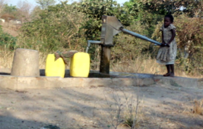

Auf unserer Reise im Frühling 2015 haben wir erfahren, dass ein Grossteil der Menschen in der Region Chikwawa kein Zugang zu sauberem Trinkwasser hat. Das Wasser wird aus selbst gegrabenen Löchern geschöpft, welche zu wenig tief sind um sauberes Trinkwasser zu erhalten. Abwasser versetzt mit Seife, Chemikalien, Fäkalien usw. gelangt in den Wasserkreislauf. Zudem ist das Herabsteigen in die Löcher gefährlich, da diese nicht stabilisiert und gesichert sind.
Mit den Spenden wurden nach der Überschwemmung Chemikalien verteilt, mit denen das Wasser behandelt und trinkbar gemacht wird. Dies ist jedoch auf Dauer keine Lösung, da sich die Einwohner diese Chemikalien nicht leisten können und es über längere Zeit auch nicht gesund ist. Deshalb haben wir entschieden, mit den Spenden einen Brunnen zu bauen, der sauberes Trinkwasser garantiert.
Josephy hat zusammen mit den Chiefs aus den verschiedenen Dörfern den optimalen Standort eruiert.
Bis jetzt wurden zwei Brunnen gebaut. Damit alle Bewohner der Region Chikwawa Zugang zu sauberem Trinkwasser haben, benötigt es noch weitere Brunnen.
Vorherige Situation |
||
Einsatz von Chemikalien |
||
Ein Brunnen war bereits vorhanden |
||
Bau von neuem Brunnen |
||
|  |